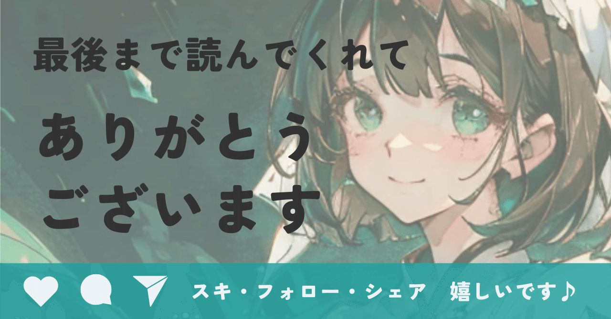

マガジンを購入してくださった方へ
無料公開で書かなかった肝の部分を追記しました！ご購入感謝です。
ぜひ再読くださいませ♪
少しだけ告知です。
＼マガジン好評発売中／
人気記事をまとめた、マーケティング多めの
ビジネス戦略買い切り型マガジンです。
好調なので500円に値上げしました！！
ただいま最安値です。ワンコインで過去記事や今後の有料記事も読み放題です。
以下のリンク先から販売してます▼
https://note.com/alive_sheep6563/m/m1e2e931f4c48
先日のAIイラストの記事から、たくさんの方にフォローいただき、とても感謝です😊
誤解の無いようにお伝えすると、私は
ビジネス記事がメインです。
教員から転職して今の仕事をしていると、
分かったようでわからないビジネス用語って
たくさんあるなあ…
と思う機会が本当に多い。
元教員なのでビジネスの素養なんて全く無く、
特にマーケティング系の話題はさっぱり分からなくて、とにかく着いていこうと必死。
５年間で学んだ起業支援の知識を記事にまとめているうちに、読んでくださる方が増えたのは本当に嬉しい。
だからせっかく読みに来てくれた方には、
必ず事例を入れた記事にしてます。
抽象論の説明も悪くはないんだけれど、
理論や戦略を実現した結果どうなったのか。
私はそういう部分を知りたいんですよね。
それに、企業の知られていない努力や戦略を知るのって、新しいものの見方が発掘されるようでおもしろいんです。
例えばスーパーでお菓子のキャンペーンを見たときに、こういう意図があるのかも…って思えるようになってきたら、目が肥えてきた証拠。
note運用にもヒントになりそうな題材を選んで書いてるので、ぜひ読みください♪
さて本題。
世の中には本当に良いのに、なぜか売れないものがたくさんあります。支援先の会社もそう。
なぜうちの商品が売れないんだ…
作り手としては、胸が締め付けられるくらい悔しい。
そんな経験がある方もいるかもしれませんね。
ただ、そんなときこそ発想の転換。
この先はマーケティングを知らなくても分かる内容。
知っていたらその真価がさらに分かると思う。
実は商品が悪いんじゃなくて、
売る相手を間違えているだけってパターンが
結構あったり無かったり。
そんな話を、スタートアップの実話をもとに語ります。
洗濯物を畳むロボットを作っていた、とあるスタートアップ
話の主役は、家事を手伝うロボットを開発する会社。ugo(ユーゴー)株式会社っていいます。
当時のプレスリリース▼
なんかかわいくないですか？
このロボットちゃん🤖
ロボットの名前はugo（ユーゴー）。
同社の主要なサービス名やブランド名にもなっており、遠隔操作が可能なアバターロボットとして、施設巡回や点検、清掃などの業務で活用されてるんです。
https://youtu.be/j_Z1DCrbuYA?si=gziAK-FmohUgAYCm
どうでもいいですが、私はユーゴーくんって呼んでます。
この会社を初めて知った時は、そりゃあ胸が躍りました。
洗濯物を畳むときって、
角を揃えて折りたたんで、服の上に崩れないように積み上げて。
それを家族4人分畳むって疲れちゃう。
さあそのすばらしい技術を見せてもらおう！
と思っていたんですが、畳むのにはずいぶん時間がかかっていたとのこと。
先輩の話によると、１枚のワイシャツを畳むのに10分以上かかってたんですって。う〜む…
洗濯物を畳む動作をロボットに再現させるのは、高度な技術が必要なんだそうです。
Tシャツ、タオル、靴下、デニム
生地の柔らかさも違う
形も違う
重ね方も人によって違う
ロボットにこの微妙な動作を再現させるのって、ものすごく難しいんです。
部品は増える、プログラムは複雑になる、
とんでもない額のお金も時間もかかる。
がんばって改良しても、一家に一台ロボットを置くには狭い家が多いし何より高額。
しかも、洗濯物を畳むのは遅い…
これ、売れるんか？
社外の誰もがそう持っていた矢先、スタートアップ経営者達はある事実にたどり着く。
もしかして、この技術の本当の使い所は、
一般家庭ではないのでは？
そう発想を転換した後、彼らは劇的な活躍を見せてくれたのです。
まったく別の世界への転換
彼らが目を向けたのは、なんとビルの警備 。
「いや全然違う仕事じゃん！」
そう思いませんか？
でも実はロボットの能力をよく見ていくと、
警備のほうがロボットの得意分野とぴったり一致していたんです。
ビルって基本的に床が平らですよね。
段差は少ないし、車椅子用のスロープがあればロボットも移動できる。
改良点としては、エレベーターのボタンを押すところ。ここはすぐクリアできたそうです。
洗濯物のような複雑な操作ではなく、
巡回する
異常がないか確認する
必要があればスタッフに通知する
このシンプルな作業こそ、本来
ロボットがもっとも得意な領域なんですよね。
家事ロボットでは評価されなかった技術が、
市場を変えた途端、一気に輝き始めたんです。
さらに注目すべきは、市場の性質。
家事ロボットの市場では、顧客がロボットの家事にお金を払う習慣がまだ確立されていませんでした。
しかも家事代行サービスや家電という、
超レッドオーシャンも隣接している。
しかし、ビル管理市場は、警備員さんにお金を払う習慣がすでにあるんです。
この、すでにお金を払う習慣がある市場の中で、ライバルが解決できていない課題を見つける。
これが失敗しない市場選定の基本中の基本なんですが、見つけるのが非常に難しいんです。
https://youtu.be/pbRGpzbLcDs?si=HOl08Zbea39n7Zm8
市場選びで生まれた新しい価値
この会社はここからさらに面白いサービスを作ります。
ロボットが夜中に見回る様子を、時差のある
海外のスタッフがリモートでチェックする
仕組みを作ったんです。
日本に住む働く人の夜勤の負担が減り、
海外に住む人々に仕事が生まれるし、
警備員不足の日本にも大きく貢献。
結果として、この会社は
J-Startup (国がすごいスタートアップとして認定)にも選ばれるほど評価されました。
高市政権では、ハードウェアやロボットティクス開発といったディープテック分野に積極的に投資するという政策も掲げられた。
国が今後後押しするような分野ど真ん中なんですよね。IPO株、買いたくなっちゃう。
話を戻すと、売り方を変えただけで、企業の価値が一気に跳ね上がったんです。
同じ技術なのに、売り先を変えただけで
ここまで変わるってすごいと思いませんか？
良いものなのに売れないのは、あなたのせいじゃない
良いものでも、合わない人には評価されない。
でも、必要としている人のところに行けば、一瞬で価値になる。
学校でクラスが変わったら急に伸び伸びできる子っていますよね。
適材適所。
売れないときに疑うべきポイントの1つとして、
この商品、本当に必要としてる人のところに
届けてる？
という点を入れてみてほしいです。
考え方一つで視点がぜんぜん変わるんですね。
売り先を選ぶって、相性の話
市場っていうと大げさで専門的な感じがしますが、シンプルに言えば売り先を変えること。
・辛口カレーは辛いもの好きに
・スイーツは甘いもの好きに
こんな感じで、
「誰にとって価値が一番高いのか？」を選ぶ行為なんです。
届ける相手を変えるだけで、商品の価値は何倍にもなるんですよね。
あなたの良いものは、まだ本当の居場所にないだけかも
この記事を読んでいるあなたがもし、
良いものを作ってるのに売れない…
頑張ってるのに届かない…
そう感じているなら、
本当に合っている売り先、市場にまだ出会えていないだけかも。
もちろん本当に必要とされる商品なのか？
という仮説を調べることは必要だけれど、
相性の合う場所を見つけるという発想があってもいいのかなと思います。
今日もお付き合いいただき、嬉しいかぎり。
感想・リクエストとっても喜びます♪
イラストかわいい！みたいなコメントも
大歓迎です✨
一生懸命、描いてます！AIが！
一気に寒くなりましたし、お身体を大切にして
過ごしてくださいね♪
